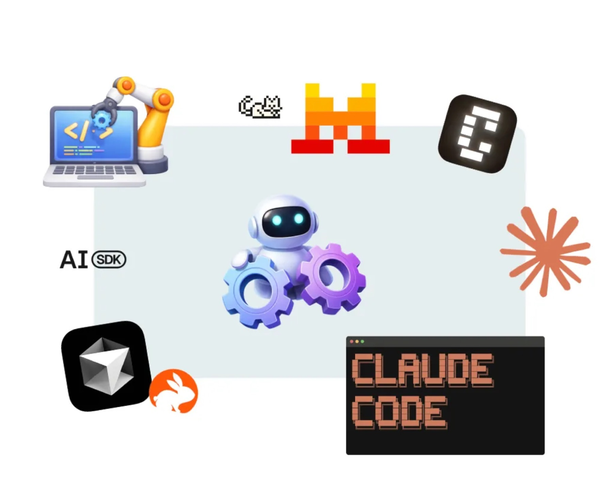
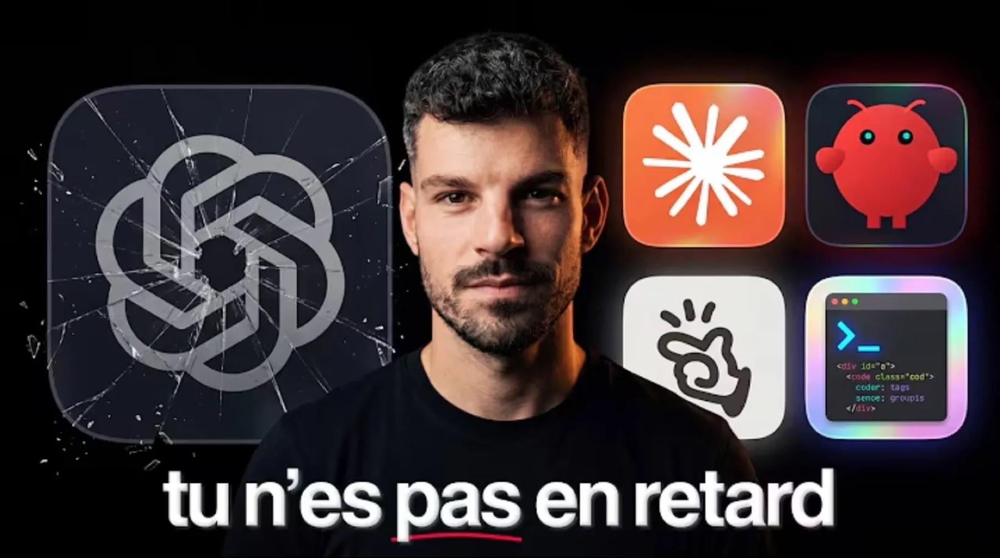
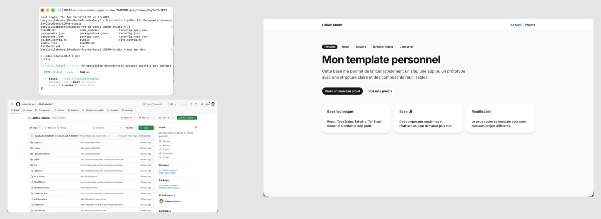

Entre le moment où j'ai commencé à écrire cet article et aujourd'hui, le paysage a encore changé. De nouveaux outils sont sortis, d'autres ont énormément évolué, et certains concepts qui semblaient expérimentaux il y a quelques mois se sont déjà installés dans les workflows produit.
On ne parle plus seulement d'une IA qui génère une maquette ou un texte d'interface. On parle maintenant d'agents capables de lire une base de code, de modifier des fichiers et de lancer des commandes. Ils produisent des prototypes, travaillent directement dans un canvas de design et passent d'un environnement de code à Figma.
Claude Code en est un exemple visible, mais ce n'est qu'un exemple parmi d'autres : Codex, Mistral Vibe ou d'autres agents peuvent répondre au même besoin selon les équipes, les contraintes techniques et les environnements de travail.
Ce texte reste un retour d'expérience. Celui d'un designer encore junior, curieux mais pas expert, qui découvre progressivement que son métier ne se limite plus à produire des écrans. Il s'élargit vers la compréhension du produit, du code, des workflows d'équipe et des outils qui permettent de passer plus vite d'une idée à quelque chose de tangible.
Le paysage a changé

Il y a deux ans, le quotidien d'un designer UX/UI suivait encore un chemin assez lisible : recherche utilisateur, wireframes, maquettes Figma, prototypes, puis handoff au développement. En 2026, ce chemin existe toujours, mais il n'est plus aussi linéaire.
- Google Stitch pousse l'idée de vibe design : on décrit une intention, une ambiance, un usage, et l'outil génère des interfaces à partir du langage naturel. Depuis sa refonte de mars 2026, c'est un véritable canvas piloté par l'IA : on peut lui parler à la voix, lui demander des critiques en temps réel et enchaîner plusieurs écrans d'un même parcours.
- Figma resserre le lien entre design et code avec Figma Make, le Figma Agent et le MCP. Le canvas devient un endroit où l'on clarifie une intention, où l'on génère des variations, où l'on travaille des états, et où un agent peut écrire directement, en respectant le design system.
- Framer a franchi un cap avec Framer 3.0 et ses agents intégrés au canvas : ils génèrent des pages, ajustent des composants, gèrent les breakpoints, écrivent du code et connectent le CMS. Chaque modification reste une vraie modification Framer, qu'on peut relire dans une branche avant de la publier.
Pour aller plus loin sur les outils IA du moment, j'ai vu récemment cette vidéo de theyo :

Ce qui change, ce n'est donc pas seulement la liste des outils. C'est la nature même du workflow. Le designer ne travaille plus uniquement avec un logiciel de design : il travaille avec des agents, des canvas, des environnements de code, des prompts, des design systems et des boucles d'itération beaucoup plus courtes.
Il faut rester lucide. Ces outils sont impressionnants pour explorer vite, produire des premiers jets ou créer des prototypes simples. Mais dès qu'on entre dans un produit plus complexe, avec des parcours spécifiques, des contraintes métier, des arbitrages produit et un vrai design system, l'IA ne suffit pas seule.
Elle accélère l'exécution. Elle ne remplace pas la réflexion.
Mon déclic
Chez BearStudio, l'IA n'est plus un sujet de veille lointain. C'est un sujet concret, quotidien, qui touche déjà la manière dont on conçoit, dont on développe et dont on collabore.
Au départ, j'ai surtout découvert ces outils par le code. L'équipe avait mis en place un Design Playground, un environnement sur GitHub qui me permettait de tester, de comprendre la structure d'un projet, de manipuler un terminal, de lancer un serveur local et de faire mes premiers pas hors de Figma.
C'est là que Claude Code est arrivé dans mon parcours. Mais soyons précis : ce n'est pas magique, et ce n'est pas « le » sujet en soi. C'est un agent IA de code. Il peut lire un projet, proposer des modifications, éditer des fichiers, lancer des commandes ou expliquer une base de code. Demain, ce rôle pourra être joué par un autre agent selon le contexte.
Ce qui m'a marqué, c'est le changement de posture. Avant, dès que je sortais de la maquette, j'avais l'impression d'entrer dans un territoire réservé aux développeurs. Aujourd'hui, je peux tester une idée, suivre les étapes, lire les erreurs, demander de l'aide à l'agent, puis revenir vers un développeur avec quelque chose de plus concret.
Je ne suis pas développeur. Je ne comprends pas encore tout. Mais je progresse. Je sais lancer un projet et comprendre ce que veut dire npm run dev, lire une arborescence, brancher un template ou faire une pull request. Et surtout, je sais poser de meilleures questions.
Pour un développeur, ce sont peut-être des gestes simples. Pour moi, chacun est un pas de plus vers un rôle de designer plus complet.
Le meilleur exemple, c'est sans doute mon propre template de design, DA-VISION. Avec les ressources open source qu'on trouve en ligne et ce que l'équipe m'a appris, j'ai monté une base React prête à l'emploi : une structure claire, des composants réutilisables, que je peux cloner pour démarrer un site, une app ou un prototype en quelques minutes. Il y a quelques mois, je ne me serais pas cru capable de faire ça.

Pourquoi rester sur le banc n'est plus une option
On peut comprendre l'hésitation : l'IA avance vite, les outils changent tous les mois, et on a vite l'impression qu'il faut tout apprendre d'un coup. Mais le paysage n'attend pas. Les équipes qui intègrent l'IA livrent plus vite et explorent plus de pistes, et les designers capables de faire le lien entre design et développement deviennent plus autonomes, plus recherchés.
Le métier dans lequel on entre aujourd'hui n'est plus celui d'il y a trois ans. Un portfolio de maquettes Figma ne suffira bientôt plus : ce qui comptera, c'est comprendre un produit dans sa globalité, utiliser l'IA comme un levier et parler le langage des devs, même imparfaitement.
Le vrai risque, ce n'est pas de se tromper d'outil ou de rater un prompt. C'est de ne rien tenter et de voir le métier avancer sans soi.
La curiosité fait la différence
Je ne maîtrise pas tous les outils cités ici, et j'ai encore des journées où tout va trop vite. Mais je ne suis plus sur le banc, et c'est la curiosité qui a fait la différence, pas le talent ni un diplôme d'informatique.
Cela dit, je n'ai pas fait ça seul : chez BearStudio, on me pousse à explorer et on me donne l'espace pour apprendre. Être entouré de gens qui croient en cette évolution, ça change tout.
Le métier de designer UX/UI ne meurt pas, il s'élargit. Si cet article donne juste l'envie de tester un outil ou de demander à un collègue développeur comment marche un repo, c'est déjà un premier pas hors du banc.